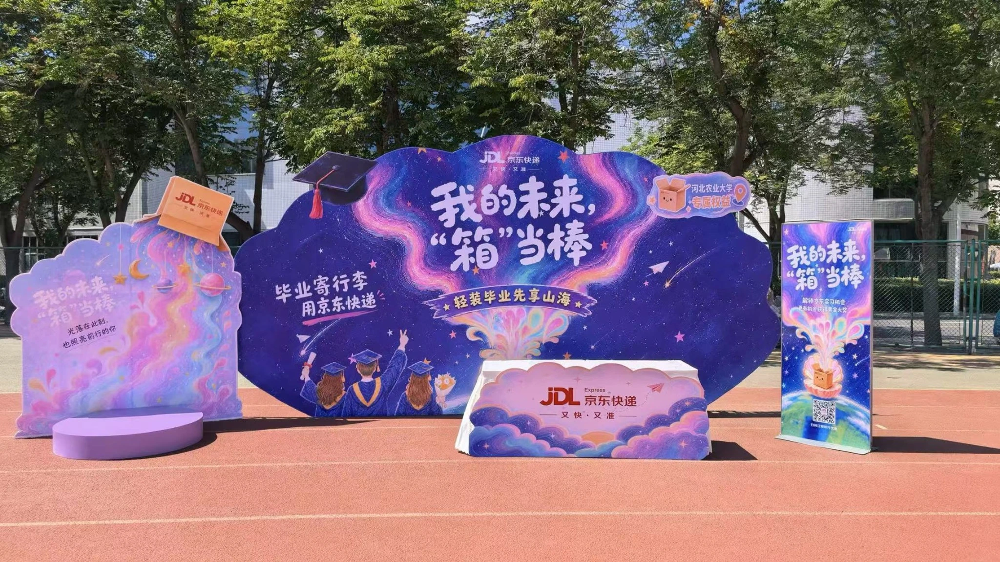
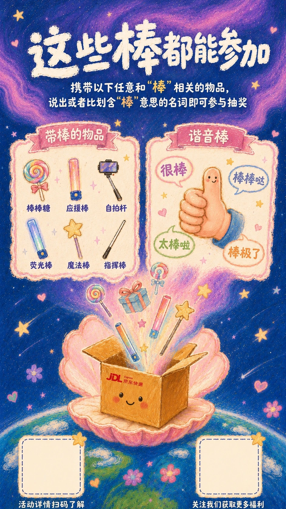
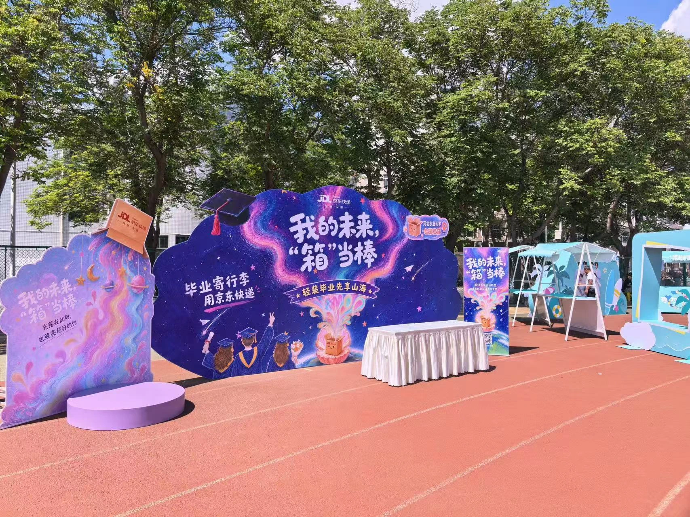

测试与分享
H5 人格测试 → 社交分享
用轻量内容打开毕业话题，让学生进入活动。

2026 年 5—7 月
Creative & Design Lead
创意设计负责人
H5 UI · 3D 方案 · 活动物料
已完成视觉交付与线下落地
让毕业生愿意参与，
也让互动通向实际需要。
毕业意味着告别，也意味着整理行李、寄送物品和奔向下一站。活动以毕业情绪吸引参与，通过 H5、校园打卡与抽奖，把品牌体验连接到寄件优惠券和京东快递小程序。
我从 H5 开屏页阶段介入，确定线上入口的视觉基调，并将其延展到线下空间、互动装置和活动物料；同时负责客户对接、人员统筹、创意方向、3D 建模渲染与制作落地协同。
H5 人格测试 → 社交分享
用轻量内容打开毕业话题，让学生进入活动。
博士帽棒棒糖道具 → 线下打卡 → “开蚌”抽奖 → 毕业留影。
兑奖领取寄件优惠券 → 跳转京东快递小程序，以毕业寄件需求承接互动。
以上为活动路径梳理。曝光、领券、核销及寄件转化数据尚未取得，不作为已验证成效。
星空、流光、蚌壳与快递箱，
构成线上线下共同的视觉线索。

以 H5 开屏建立产品基调，将毕业主题转化为可感知的色彩、字体和图形语言，并延续到答题页 UI。
主导“蚌壳 × 快递箱”装置的视觉设计与深化，让“开蚌”互动、快递业务符号与拍照打卡汇聚在同一空间中心。
通过建模、渲染和方案图沟通空间效果，协调主装置、导视、互动与兑奖物料的设计制作。

理解 Brief 与落地约束，借助 AI 生成候选方向，人工筛选并与客户对齐。
围绕确认方向深化开屏和视觉表达，建立后续空间与物料的延展基础。
结合客户反馈与制作条件迭代，推进 3D 建模、渲染与方案图。
分配团队任务，协调物料设计、制作与搭建，持续校准视觉一致性。
节奏依据本人项目回顾。AI 用于前期探索；方向判断、客户沟通、设计深化和落地控制由人完成。
京东图书内容营销与线下阅读活动
传播物料 · 活动信息 · 现场承接
以创意阅读姿势作为参与切口，将活动玩法、参赛方式和线下场次拆分为系列传播物料。用户通过拍摄、带话题发布和 @ 京东图书参与，让阅读从个人行为进入社交表达。
京东图书线下阅读活动的另一模块，以新书分享和签售连接读者与作者。本案例以已提供的传播物料及活动相册作为展示依据。
京东图书线下活动实拍相册
毕业季涵盖 H5 开屏、答题页 UI、3D 方案与效果图、线下物料及落地协同；京东图书以系列传播物料承接活动玩法与到场信息。页面展示原始设计作品和毕业季现场照片。
将 AI 方向探索、人工设计判断、客户沟通和团队分工串联起来；以线上视觉为起点，把界面、空间和物料推进到一致的实际交付。
已完成设计与落地，不等同于已验证营销成效。最终曝光、领券、核销、寄件转化及图书活动传播数据尚未取得，后续应结合实际数据复盘。